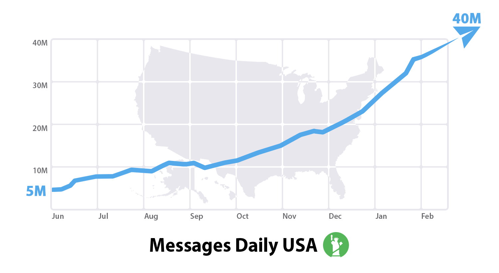
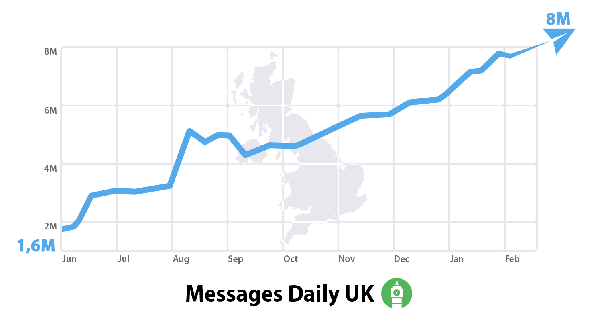
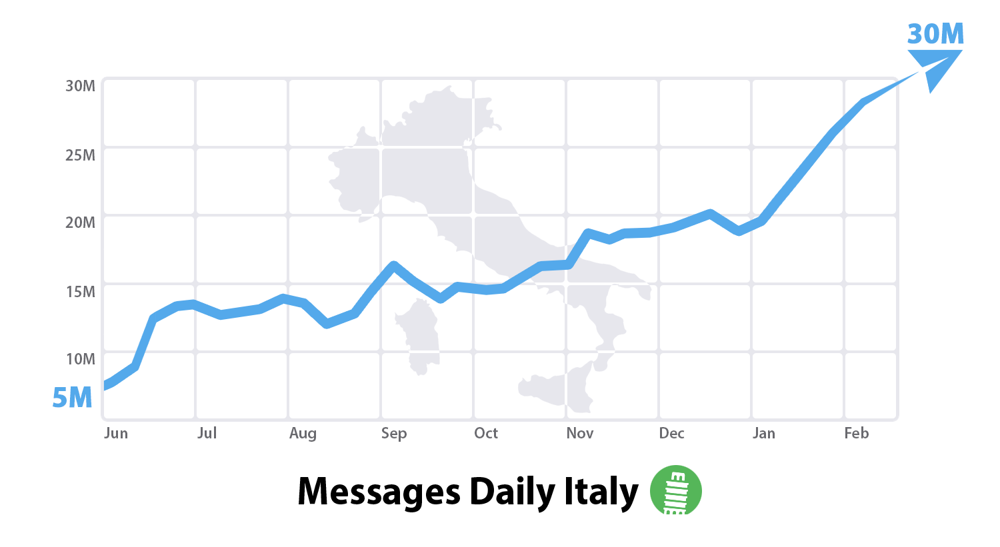
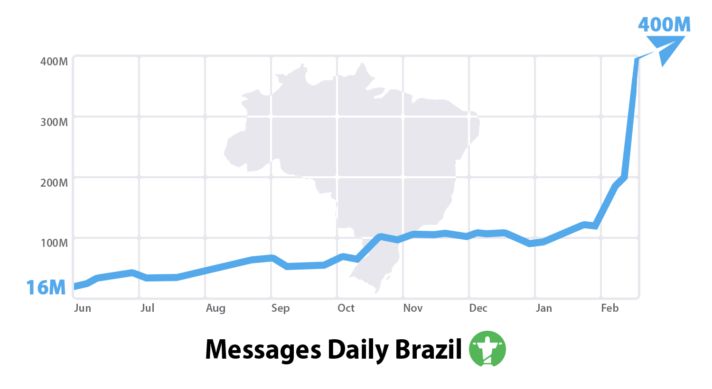

首頁 >
官方新聞 > 各國日益增長的 Telegram 使用人口
當我們在忙著增加 Telegram 的功能和擴展服務時，你們許多人則是忙著傳播有關 Telegram 這個應用程式的資訊。因此，我們看到世界各地 Telegram 的穩健增長。
這種增長是完全屬於你的成就，因為我們還沒有花費在廣告上一分錢。謝謝你 - 並且繼續努力吧！我們自去年六月開始測量用戶活動，以向你展示一些令人鼓舞的圖表。
這裡是你做了什麼：從2014年6月，每天在美國傳送的 Telegram 訊息增長了8倍，英國增長了5倍，意大利增長了6倍。類似的圖，可以繪出超過30多個國家，從印度到土耳其，從馬來西亞到智利。



至於巴西 - 下面美麗的圖已經過時了。今天和前一天，有450萬的巴西人註冊了 Telegram。他們今天會傳送7億則數量級的訊息。

如果你有任何朋友還沒加入的，把他們一起帶上 - 這樣他們就不是最後參加聚會的人了。
2015年2月27日
電報團隊